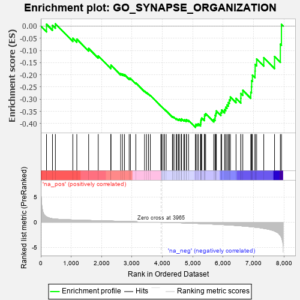
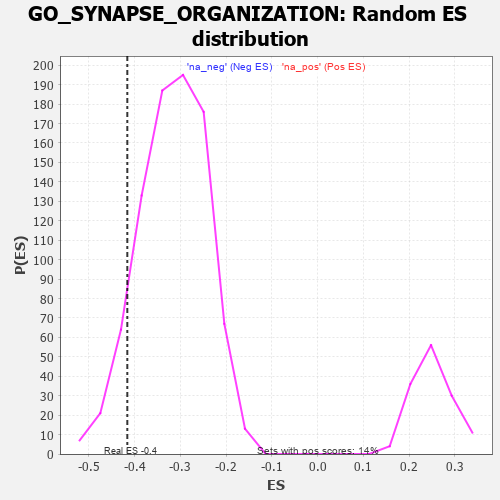

| | | Dataset | 7d |
| Phenotype | NoPhenotypeAvailable |
| Upregulated in class | na_neg |
| GeneSet | GO_SYNAPSE_ORGANIZATION |
| Enrichment Score (ES) | -0.41604844 |
| Normalized Enrichment Score (NES) | -1.3148007 |
| Nominal p-value | 0.08574739 |
| FDR q-value | 0.45823172 |
| FWER p-Value | 1.0 |
Table: GSEA Results Summary

Fig 1: Enrichment plot: GO_SYNAPSE_ORGANIZATION
Profile of the Running ES Score & Positions of GeneSet Members on the Rank Ordered List
| PROBE | GENE SYMBOL | GENE_TITLE | RANK IN GENE LIST | RANK METRIC SCORE | RUNNING ES | CORE ENRICHMENT | | 1 | DNER | | | 188 | 1.098 | 0.0075 | No |
| 2 | MESD | | | 384 | 0.713 | 0.0031 | No |
| 3 | CDC20 | | | 480 | 0.644 | 0.0094 | No |
| 4 | MEF2C | | | 1054 | 0.473 | -0.0497 | No |
| 5 | CRIPT | | | 1185 | 0.449 | -0.0533 | No |
| 6 | FZD1 | | | 1574 | 0.379 | -0.0917 | No |
| 7 | PAK3 | | | 1889 | 0.322 | -0.1223 | No |
| 8 | WASF1 | | | 2303 | 0.259 | -0.1673 | No |
| 9 | REST | | | 2308 | 0.259 | -0.1604 | No |
| 10 | GNPAT | | | 2629 | 0.208 | -0.1950 | No |
| 11 | DSCAM | | | 2689 | 0.200 | -0.1967 | No |
| 12 | FNTA | | | 2755 | 0.190 | -0.1996 | No |
| 13 | ZC4H2 | | | 2907 | 0.164 | -0.2140 | No |
| 14 | RAB17 | | | 2950 | 0.157 | -0.2149 | No |
| 15 | MTMR2 | | | 3126 | 0.133 | -0.2332 | No |
| 16 | KIF1A | | | 3415 | 0.088 | -0.2672 | No |
| 17 | CDK5 | | | 3480 | 0.080 | -0.2730 | No |
| 18 | PIN1 | | | 3543 | 0.069 | -0.2789 | No |
| 19 | DOK7 | | | 3603 | 0.059 | -0.2847 | No |
| 20 | GPC6 | | | 3950 | 0.002 | -0.3285 | No |
| 21 | IGF1R | | | 3970 | -0.002 | -0.3309 | No |
| 22 | VPS35 | | | 3989 | -0.006 | -0.3330 | No |
| 23 | ACTN1 | | | 4050 | -0.016 | -0.3401 | No |
| 24 | ROBO2 | | | 4066 | -0.018 | -0.3415 | No |
| 25 | ABL1 | | | 4125 | -0.027 | -0.3481 | No |
| 26 | OPA1 | | | 4330 | -0.065 | -0.3721 | No |
| 27 | SETD5 | | | 4343 | -0.067 | -0.3717 | No |
| 28 | ARF4 | | | 4383 | -0.073 | -0.3746 | No |
| 29 | NDRG1 | | | 4456 | -0.085 | -0.3813 | No |
| 30 | LRRK2 | | | 4467 | -0.087 | -0.3800 | No |
| 31 | NPTN | | | 4519 | -0.098 | -0.3837 | No |
| 32 | NTRK2 | | | 4543 | -0.104 | -0.3836 | No |
| 33 | ABI2 | | | 4554 | -0.106 | -0.3819 | No |
| 34 | DLG5 | | | 4619 | -0.121 | -0.3865 | No |
| 35 | SDK1 | | | 4627 | -0.124 | -0.3839 | No |
| 36 | LMX1A | | | 4631 | -0.124 | -0.3807 | No |
| 37 | ARF6 | | | 4704 | -0.140 | -0.3859 | No |
| 38 | WASF3 | | | 4730 | -0.145 | -0.3849 | No |
| 39 | MYO5A | | | 4787 | -0.155 | -0.3875 | No |
| 40 | PCLO | | | 4793 | -0.156 | -0.3837 | No |
| 41 | DLG1 | | | 4860 | -0.169 | -0.3873 | No |
| 42 | DRD2 | | | 5088 | -0.221 | -0.4097 | Yes |
| 43 | ITSN1 | | | 5094 | -0.222 | -0.4040 | Yes |
| 44 | RER1 | | | 5139 | -0.235 | -0.4029 | Yes |
| 45 | HDAC6 | | | 5183 | -0.244 | -0.4014 | Yes |
| 46 | SSH1 | | | 5254 | -0.258 | -0.4029 | Yes |
| 47 | PTEN | | | 5262 | -0.261 | -0.3963 | Yes |
| 48 | PICK1 | | | 5265 | -0.263 | -0.3891 | Yes |
| 49 | EPHA4 | | | 5273 | -0.265 | -0.3824 | Yes |
| 50 | MAGI2 | | | 5295 | -0.269 | -0.3774 | Yes |
| 51 | GRIN1 | | | 5381 | -0.291 | -0.3798 | Yes |
| 52 | FZD5 | | | 5386 | -0.292 | -0.3720 | Yes |
| 53 | DLG4 | | | 5388 | -0.293 | -0.3638 | Yes |
| 54 | MDGA1 | | | 5424 | -0.301 | -0.3596 | Yes |
| 55 | LRRC4 | | | 5692 | -0.371 | -0.3829 | Yes |
| 56 | LRFN4 | | | 5733 | -0.387 | -0.3769 | Yes |
| 57 | SLIT1 | | | 5735 | -0.387 | -0.3660 | Yes |
| 58 | TLR2 | | | 5761 | -0.395 | -0.3579 | Yes |
| 59 | GLRB | | | 5776 | -0.398 | -0.3483 | Yes |
| 60 | LRFN1 | | | 5926 | -0.443 | -0.3545 | Yes |
| 61 | DCTN1 | | | 5950 | -0.454 | -0.3445 | Yes |
| 62 | ADD2 | | | 6046 | -0.487 | -0.3426 | Yes |
| 63 | DBNL | | | 6084 | -0.501 | -0.3330 | Yes |
| 64 | DLG2 | | | 6126 | -0.513 | -0.3236 | Yes |
| 65 | GRID2 | | | 6170 | -0.528 | -0.3140 | Yes |
| 66 | INSR | | | 6204 | -0.538 | -0.3028 | Yes |
| 67 | CDC42 | | | 6236 | -0.548 | -0.2910 | Yes |
| 68 | PTPRD | | | 6423 | -0.629 | -0.2967 | Yes |
| 69 | CLN3 | | | 6580 | -0.699 | -0.2965 | Yes |
| 70 | ARF1 | | | 6583 | -0.701 | -0.2767 | Yes |
| 71 | PTPRS | | | 6646 | -0.738 | -0.2635 | Yes |
| 72 | PTPRF | | | 6908 | -0.872 | -0.2717 | Yes |
| 73 | LRP8 | | | 6931 | -0.889 | -0.2491 | Yes |
| 74 | GHSR | | | 6937 | -0.894 | -0.2243 | Yes |
| 75 | DNM1L | | | 6963 | -0.913 | -0.2014 | Yes |
| 76 | MYH10 | | | 7048 | -0.966 | -0.1844 | Yes |
| 77 | GRM5 | | | 7053 | -0.969 | -0.1573 | Yes |
| 78 | RYK | | | 7102 | -1.000 | -0.1348 | Yes |
| 79 | NGEF | | | 7335 | -1.209 | -0.1297 | Yes |
| 80 | ANK3 | | | 7690 | -1.740 | -0.1249 | Yes |
| 81 | FYN | | | 7881 | -2.622 | -0.0742 | Yes |
| 82 | ASIC2 | | | 7917 | -2.995 | 0.0068 | Yes |
Table: GSEA details [plain text format]

Fig 2: GO_SYNAPSE_ORGANIZATION: Random ES distribution
Gene set null distribution of ES for GO_SYNAPSE_ORGANIZATION